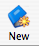

Aruspix can also deal with whole books or compilations of pages, providing a visual index for the book while you work on individual pages within it. It is much more convenient to pre-process an entire book all at once than to run each page separately. In order to do this, you need to make a file for the book or compilation of pages, and prepare a place to store these pages once they have been edited with Aruspix. As before, each page within your book should only contain a single page of music, and be stored as a TIFF file.
Open Aruspix, and click on the ``New book'' icon in the tools bar . A window will open with several meta-data fields that you can use to label your book (Figure 8).
All of these fields are optional. If you have a particular name that want to use for your book, instead of the suggested fields, type that name into the RISM field. For now, we will use a demo book, and fill in all the optional fields:
You will see that the Aruspix screen is now divided into two sections. You have your book directory on the left, and a working space on the right. Before you can pre-process the book, you need to ensure that only pages that contain music will be run. If you open the file that is labeled page 01_001.tif. you will see that it is a blank page. Right click on the file, and you can choose ``deactivate'' from the menu that appears (Figure 9). This will make the file name turn grey. Do this to the following page as well, since it is a title page and contains no music.The following pages from this book need to be deactivated:
[there is an existing aruspix file that needs to be removed for the demo, as well as some red pages that should not appear here.] Once all the non-music files are deactivated, you can pre-process the entire book by clicking ``Book'' in the application menu and choosing ``Batch preprocessing'', or by right-clicking on any file in the book and choosing ``Batch preprocessing'' from the menu that appears. Preprocessing will take approximately 1 minute per page.
After the preprocessing has finished, you should find a new directory of pages in the Aruspix files folder, just below the Images folder on the left-side of the screen. These are the files that you will be using from now on.
If you open the first page in the Arupsix files, 01_003, you will see the colour-coded version of the page that Aruspix will be working with.
From here, you can follow the same steps that you used in the demo for processing a single page.
There are no corrections in the preprocessing for this page.
Click ``Run'' in the tools menu, and wait for recognition to complete. (About 10s)
Now you are in the editing mode, and the Arupsix window is divided into three parts. As with the single page, you would at this point edit the page and correct the alignment, using the editing tools and keyboard shortcuts. For this demo, it is not necessary to edit the page. Simply click on the ``Save'' icon, which will make a green tick appear beside the file on the left screen. Ordinarily it is suggested that you edit about twenty pages, making all the necessary corrections, before you optimize the results. Running a full optimization will improve Aruspix's recognition for the specific book that you are editing, so it is worthwhile to do this once you have enough pages completed. Simply choose Book from the Application menu, and then Optimize.
The time needed for this process depends on the number of pages you use. Twenty pages takes about 50 minutes, while ten pages takes only about 20 minutes. Optimization is always a cumulative process, so if you run a full optimization every twenty pages, the second time will take about an hour and 45 minutes, since there will be 40 pages included in the run.
There are a number of editing tasks and tools that have not yet been discussed, but which will be worth reading about before you proceed with your first editing project. These can be found in the Editing Reference section.